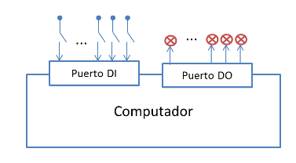
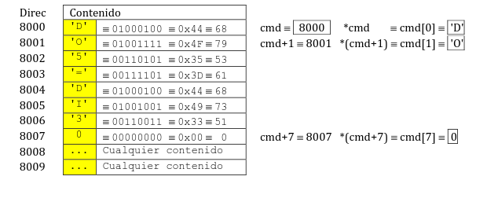

|
UNIVERSIDAD DE OVIEDO
Departamento de Ingeniería Eléctrica, Electrónica, de Computadores y Sistemas
Guía de Prácticas
|
| ASIGNATURA: Informática Industrial y Comunicaciones | CENTRO: Escuela Politécnica de Ingeniería de Gijón | ||
| ESTUDIOS: Grado en Ingeniería Electrónica y Automática |
|
||
| CARÁCTER: Obligatoria | CRÉDITOS ECTS: 6 | ||
| PROFESORADO: Ignacio Alvarez, Víctor M. Suárez | |||
Se dispone de una conexión de dos puertos de E/S digital de 8 bits a un computador.
|
 |
Se dispone de las funciones siguientes para acceso a los puertos DI y DO:
int ReadDI(); // Obtiene el valor de los bits del puerto DI
int ReadDO(); // Obtiene el valor de los bits del puerto DO void WriteDO(int value); // Escribe el valor de los bits del puerto DO |
Escribir una función que reciba una cadena de caracteres con un comando de usuario que contenga un texto con formato:
DO5=DI3
y, si es correcto, realice la opción solicitada: cambiar el estado del bit indicado (5 en este caso) del puerto de salidas DO para que sea igual al bit indicado (3 en este caso) del puerto de entradas DI, sin modificar el resto de bits del puerto de salidas DO.
Formato de la función a realizar:
|
int MiFn(const char* cmd);
|
// Con int devolvemos código de error: no usar printf()... // ... para indicar errores porque no sirve para control automático |
